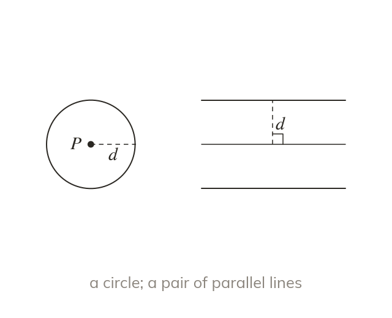

From a point and from a line
A fixed distance from a point gives a circle of radius From a straight line it gives a parallel line away on each side.
The locus of points a fixed distance from a point is a circle of radius From a straight line it is a pair of parallel lines, one on each side, each away.